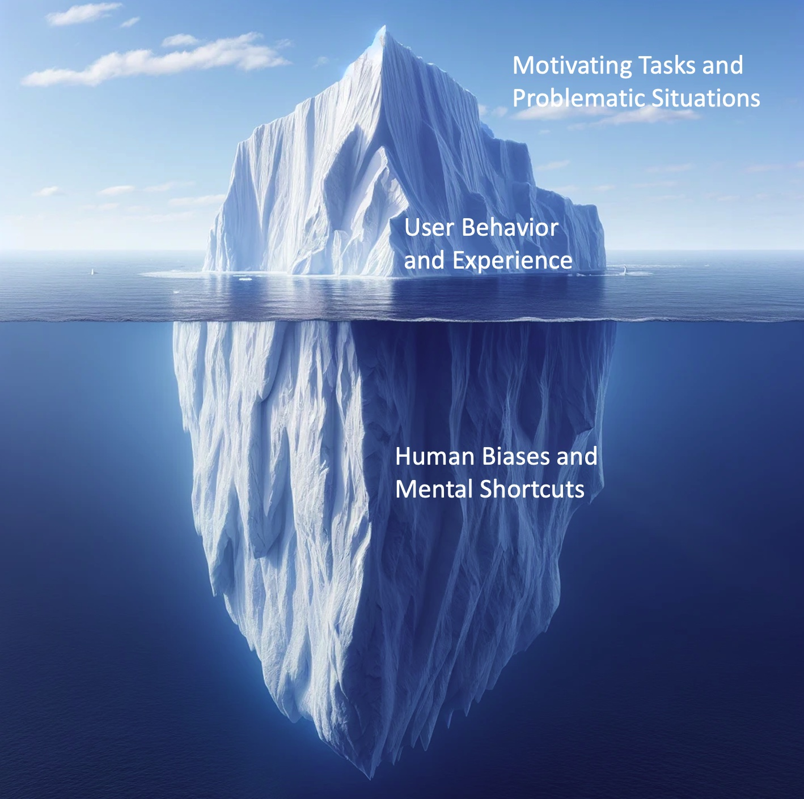

| Home | Organizers | Schedule | Materials |
While algorithmic biases and fairness has been widely discussed in mainstream computing research, how hidden human biases affect users' judgments and interaction experiences still remain understudied in information seeking and retrieval. This half-day tutorial will provide a starting point for researchers seeking to learn more about searching under uncertainty. The tutorial includes two parts. First, we will provide an introduction of the biases and heuristics program put forward by Tversky and Kahneman (1974) which assumes that people are not always rational. The second part of the tutorial will provide an overview of human biases in search, before doing a deep dive into examples and the impact of biases on varying high-stakes decisions. The tutorial will conclude with a discussion of the practical implication for how we can better design, implement, and evaluate bias-aware IR systems.
this tutorial aims to bring attention to this growing body of research and applications, provide participants with an overview of cognitive biases in search, and facilitate the discussions on the potential opportunities, challenges, and practical implications of research and evaluations on bias-aware information seeking and retrieval. With the knowledge about human biases, we hope to provide a psychologically more realistic foundation for user models, IR evaluation measures, user interface design and bias mitigation techniques in search interactions.
